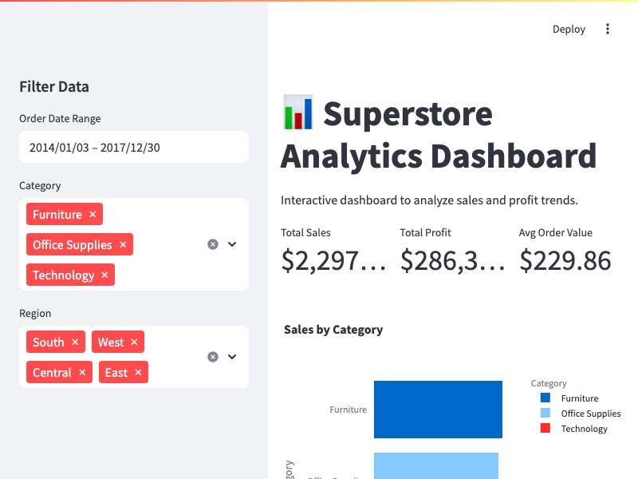
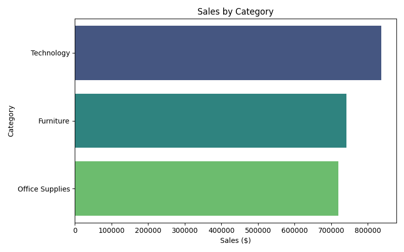
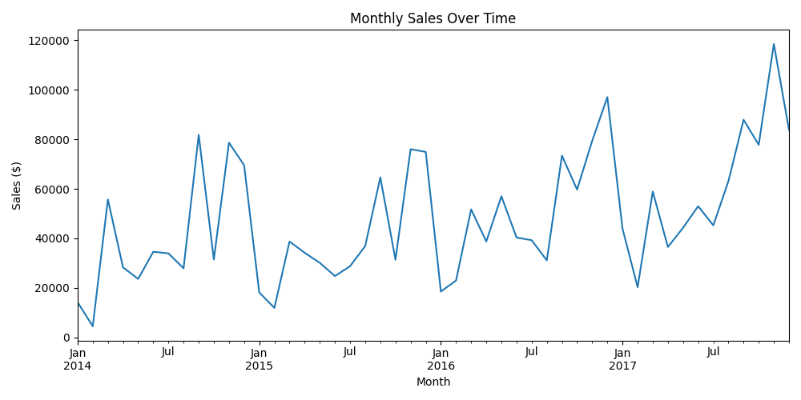
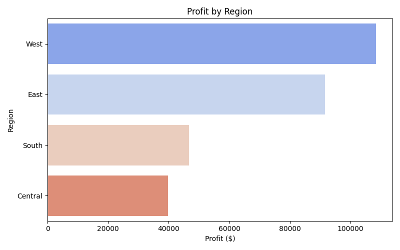

Superstore Analytics Dashboard
Interactive Retail Sales & Profit Analysis
Role: Data Analyst | Developer
Python
Matplotlib
Pandas
Data Visualization
Statistical Analysis
📊 Overview
This project analyzes retail sales and profitability data from the Sample Superstore dataset, providing interactive KPIs, sales trends, and category performance insights via a Python + Streamlit dashboard. The goal is to help business stakeholders make better decisions through clear, visualized data.
🛠 Tools & Technologies
- Python, Pandas, Matplotlib, Seaborn
- Plotly (interactive charts)
- Streamlit (dashboard framework)
- CSV dataset, SQLite, SupabaseDB
📷 Dashboard Preview



